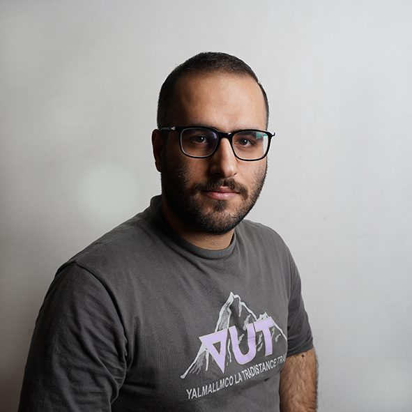

Soheil Fallah
Bagherinezhad

PhD student at the University of Trento, Italy
I work on photonic computing accelerators. Right now I am designing a high-speed FPGA datapath on an AMD RFSoC 4x2 that generates data, drives a laser with it and reads the light back. I am also very interested in approximate computing.
About
I started my PhD in Computer Science in early 2026, supervised by Prof. Philippe Velha. It is funded by ARCHYTAS, a European project that studies non-conventional AI accelerators: optoelectronic, processing-in-memory and neuromorphic. My part is the architecture of heterogeneous reconfigurable systems built around photonic engines, and my research proposal is titled “Co-Design of Heterogeneous Computing Architectures for Energy-Efficient Systems”.
Before Trento I spent several years at the University of Guilan in Iran: a bachelor’s in computer engineering, a master’s in computer systems architecture, five years as a teaching assistant and two as a research assistant in computer arithmetic. My work there covered approximate arithmetic for machine-learning hardware, residue number systems and hardware security with physical unclonable functions.
I speak English and Persian. Away from the bench I go to the gym, play chess and online games like PUBG and FIFA, and follow Arsenal.
Research
- Design a high-speed FPGA datapath that generates data, drives a laser and captures the light back for a photonic computing engine. RFSoC 4x2, Vivado, VHDL, PYNQ
- Recover high-speed samples after the optical link with a Kalman filter on the receive side. RFSoC RF-ADCs, Python
- Build an open analyzer for the RFSoC data converters, with live spectrum and scope views and DAC waveform control. Python, PYNQ, Jupyter
- Port my group’s butterfly SOA driver to the RFSoC and test the optical amplifier as an activation function. RFSoC Pmod I/O, VHDL
- Design approximate compressors and multipliers for machine learning on FPGAs. VHDL, Vivado
- Later, run neural-network inference on the RFSoC with number systems beyond binary, such as residue number systems. RFSoC 4x2, VHDL
Publications
-
Under review
S. F. Bagherinezhad, M. Gholami, M. Aminian, H. Ahmadifar. Design of an approximate 12-bit multiplier for implementation on FPGA with application in machine learning. IEEE Transactions on Computer-Aided Design of Integrated Circuits and Systems (TCAD), submitted May 2026.
-
Under review
Kalman filter recovery of high-speed data on reconfigurable systems. ARC 2027, International Symposium on Applied Reconfigurable Computing, long paper, submitted October 2026.
-
2026
M. Gholami, H. Ahmadifar, S. Fallah Bagherinezhad. Design of an approximate and optimal 6-bit multiplier circuit for implementation on FPGA with application in machine learning. Electronic and Cyber Defense 14(1), e210941.
In Persian, with an English abstract.
-
2024
A. H. Hadipour, S. Fallah, H. Ahmadifar, M. Salehi. Providing an efficient discrete wavelet transform model based on residue number system. Computer Society of Iran Journal on Computing Science and Information Technology.
In Persian.
-
2023
A. H. Hadipour, S. Fallah Bagherinezhad, et al. Designing an effective physical unclonable function using a delay-memory hybrid scheme. 6th National Conference on New Technologies in Electrical, Computer and Mechanical Engineering of Iran.
-
2023
S. Fallah Bagherinezhad, A. H. Hadipour, M. Aminian, et al. Providing an improved lightweight physical unclonable function. 6th National Conference on New Technologies in Electrical, Computer and Mechanical Engineering of Iran.
The current list is also on ORCID.
Experience
-
2026–now
PhD researcher, University of Trento
High-speed FPGA datapaths for a photonic computing accelerator, within the ARCHYTAS project.
-
2023–2025
Research assistant, University of Guilan
Approximate computing designs and their implementation on reconfigurable hardware, supervised by Dr. H. Ahmadifar and in collaboration with several Guilan faculty members. I also mentored junior students through the MSc thesis process, from the first idea to publication. Part of this work was published as a journal paper.
-
2018–2023
Teaching assistant (part-time), University of Guilan
Weekly two-hour Q&A sessions and grading of assignments.
BSc courses: Digital Circuits, Computer Architecture, Computer-Aided Digital System Design (three times), Microprocessors and Assembly Language (twice), Digital Electronics.
MSc courses: Advanced Computer Architecture, Advanced VLSI System Design (twice), Reconfigurable Systems (twice), Computer Arithmetic, Hardware-Driven Security and Trust, Advanced Programming Language.
Education
-
2026–2029
PhD in Computer Science, University of Trento, Italy
Supervisor: Prof. Philippe Velha. Funded by the European ARCHYTAS project. Expected to finish in January 2029.
-
2020–2023
MSc in Computer Systems Architecture Engineering
University of Guilan, Rasht, Iran. Final grade 19.28 out of 20.
-
2015–2020
BSc in Computer Engineering
University of Guilan, Rasht, Iran.
-
2011–2015
High school, mathematics
Shahid Beheshti High School, National Organization for Development of Exceptional Talents (Sampad), Lahijan, Iran.
Awards and honours
-
2023
Ranked 2nd among MSc graduates in Computer Engineering at the University of Guilan.
-
2015, 2020
Tuition waiver for the BSc and the MSc, University of Guilan.
-
2010
Admission to a school of the National Organization for Development of Exceptional Talents (Sampad), Iran.
Bachelor’s and master’s projects
- Color Maze, a maze game with its own VGA controller. VHDL, Spartan-6 FPGA
- Compressors for 8-bit multipliers (computer arithmetic). VHDL
- CSA, compressor and arbiter PUF (APUF) circuits at transistor level. HSPICE
- Layouts of half adders and other logic functions. L-Edit
- Hardware/software co-design course project.
- Minesweeper and tic-tac-toe games. Proteus
- An IoT light switch controlled over the mobile network. Arduino Mini, GSM module
Certificates
-
2023
Hardware Description Languages for FPGA Design, University of Colorado Boulder, on Coursera.
-
2023
Hardware Security, University of Maryland, on Coursera.
Toolbox
- Hardware
- VHDL and Verilog; Vivado block design and implementation; AMD RFSoC data converters, multi-tile synchronisation, AXI DMA and DDR4 datapaths; Zynq UltraScale+ and 7-series FPGAs.
- Design methods
- Approximate computing; pipelining, parallel processing, folding and unfolding; low-power and high-speed digital design; EDA and CAD tools.
- Software
- Python (PYNQ, NumPy, Jupyter), MATLAB, C and C++, assembly.
- Lab
- Sampling oscilloscopes, RF amplifiers, directly modulated lasers and photodiodes.
- Also
- Research writing, presenting and teaching.
- Languages
- English and Persian.